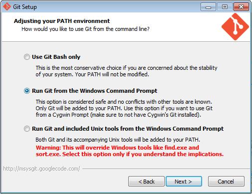
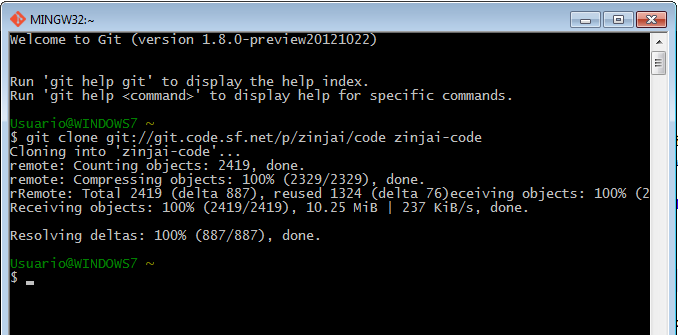

PASOS PARA LA INSTALACIÓN DE LA HERRAMIENTA GIT EN UN ORDENADOR
Instalación en Windows: Instalar Git en Windows es muy fácil. El proyecto msysGit tiene uno de los procesos de instalación más sencillos. Simplemente descarga el archivo exe del instalador desde la página de GitHub, y ejecútalo: enlace de descarga: http://msysgit.github.com/ Instalación desde codigo fuente en Linux: Si puedes, en general es útil instalar Git desde código fuente, porque obtendrás la versión más reciente. Cada versión de Git tiende a incluir útiles mejoras en la interfaz de usuario, por lo que utilizar la última versión es a menudo el camino más adecuado si te sientes cómodo compilando software desde código fuente. También ocurre que muchas distribuciones de Linux contienen paquetes muy antiguos; así que a menos que estés en una distribución muy actualizada o estés usando backports, instalar desde código fuente puede ser la mejor opción. Para instalar Git, necesitas tener las siguientes librerías de las que Git depende: curl, zlib, openssl, expat y libiconv. Por ejemplo, si estás en un sistema que tiene yum (como Fedora) o apt-get (como un sistema basado en Debian), puedes usar estos comandos para instalar todas las dependencias: $ yum install curl-devel expat-devel gettext-devel \ openssl-devel zlib-devel $ apt-get install libcurl4-gnutls-dev libexpat1-dev gettext \ libz-dev libssl-dev Cuando tengas todas las dependencias necesarias, puedes descargar la versión más reciente de Git desde su página web: http://git-scm.com/download Luego compila e instala: $ tar -zxf git-1.6.0.5.tar.gz $ cd git-1.6.0.5 $ make prefix=/usr/local all $ sudo make prefix=/usr/local install Una vez hecho esto, también puedes obtener Git, a través del propio Git, para futuras actualizaciones: $ git clone git://git.kernel.org/pub/scm/git/git.git |
  |